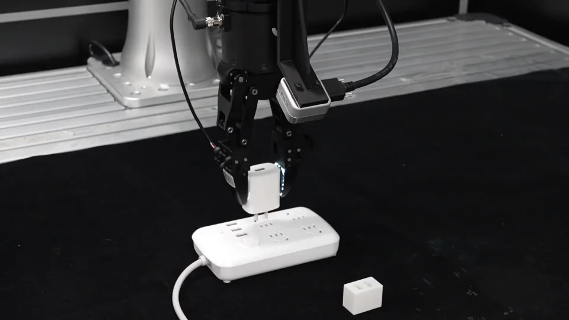
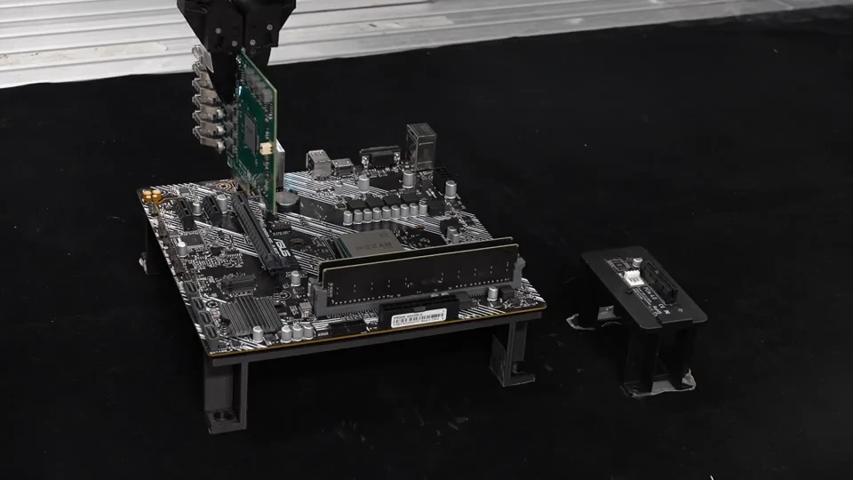
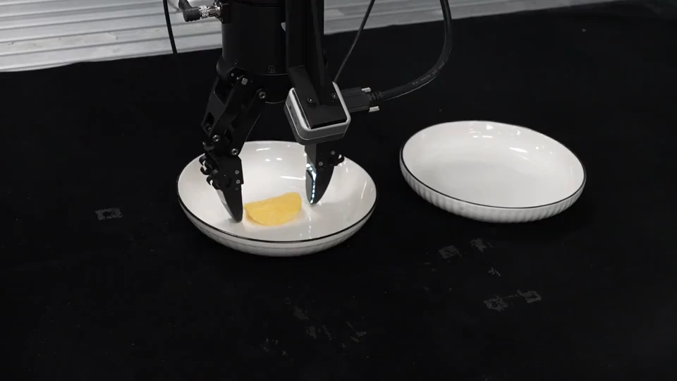
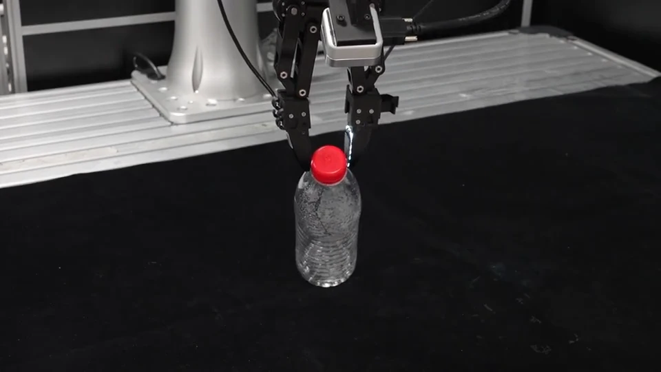
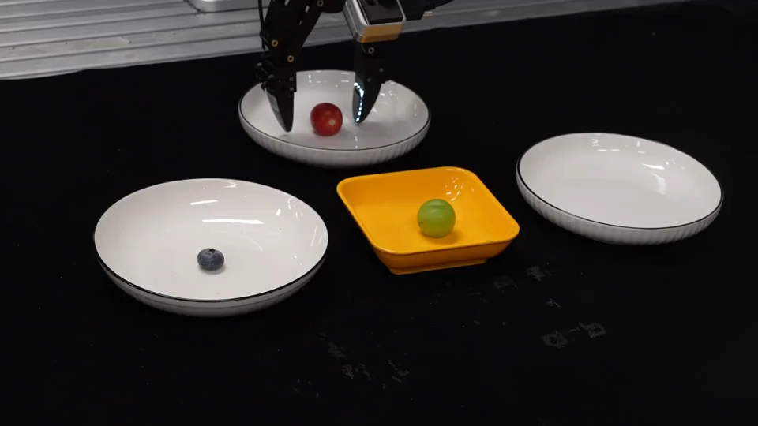
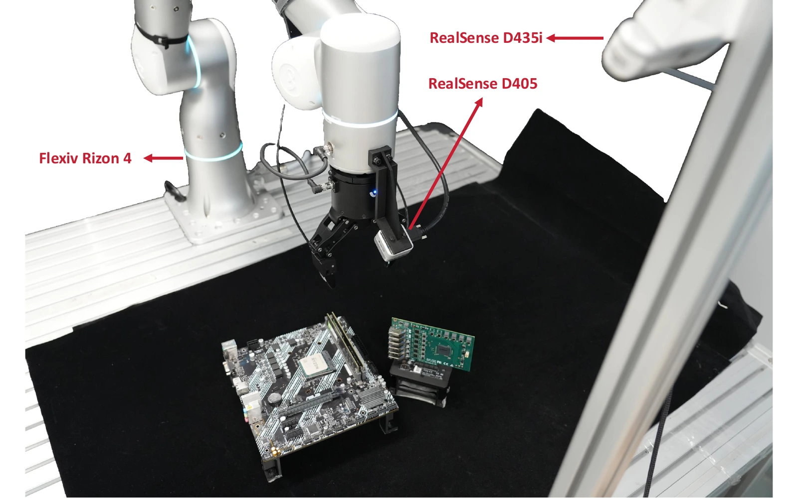

Predict & plan
A video expert predicts future visual and tactile observations while an action expert jointly generates an action chunk.
in World-Action Models for Contact-Rich Manipulation
1 School of Data Science, Fudan University2 Shanghai Innovation Institute3 NeoteAI

01 / PRECISIONCharger plug ↗
02 / ALIGNMENTExpansion card ↗
03 / FRAGILITYPotato chip ↗
04 / GRIP CONTROLEmpty bottle ↗
05 / LONG HORIZONFruit transfer ↗Five real-world tasks. One prediction-informed tactile feedback loop.
Average task success+16 percentage points over T-Rex
Per tactile correction32.9 Hz with a reusable cache
Lower inference latencyCompared with regenerating a chunk
A robot can plan what happens next.
Touch tells it what is happening now.
Small contact errors can jam an insertion or break a fragile object. Future tactile predictions provide useful expectations, but those predictions are made before an action chunk begins.
TacPAC connects this anticipated contact to live tactile feedback. A tactile expert reads each new tactile observation against a cached representation of the prediction and plan, then corrects the actions that have yet to execute. The robot keeps moving throughout.
Plan once per chunk. Read new touch against the plan. Update what comes next.
A video expert predicts future visual and tactile observations while an action expert jointly generates an action chunk.
A clean prefill pass stores predicted tactile and action representations as a reusable, layer-wise key–value cache.
Each new tactile frame triggers one expert pass, producing delta actions for the unexecuted part of the chunk.
Corrections respect the execution clock: actions already sent remain fixed. New updates start beyond a short latency window, revising only the remaining action sequence.
Explore complete rollouts across precision insertion, fragile-object handling, and force-sensitive manipulation.
Precise alignment under constrained contact.
iVideos show selected successful or failed rollouts, not all trials. Success rates summarize 20 trials per method per task. Speed applies equally to all three videos; each stops at its final frame.

A Flexiv Rizon 4 uses two InTac S1 tactile sensors in its gripper, a wrist-mounted Intel RealSense D405, and a third-person Intel RealSense D435i.
TacPAC takes a task instruction, two camera views, proprioception, and two tactile views. All methods are evaluated on the same five tasks with 20 trials per task.
Full evaluation protocol in the paper ↗64% average success, with prediction and correction working together.
Five tasks · 20 trials per task · Paper, Figure 4
Prediction alone: 37%. Full TacPAC: 64%.
Direct access to the tactile cache adds 17 percentage points.
| Method | Plug | Fruit | Chip | Bottle | Card | Average |
|---|
If you find this work useful,
please consider citing our paper.
@article{ma2026tacpac,
title={TacPAC: Tactile Prediction and Real-Time Action
Correction in World-Action Models for
Contact-Rich Manipulation},
author={Ma, Zipei and Wei, Xiaofei and Jiang, Junzhe
and Lu, Shunlin and Zhang, Li},
journal={arXiv preprint arXiv:2609.05266},
year={2026},
url={https://arxiv.org/abs/2609.05266}
}